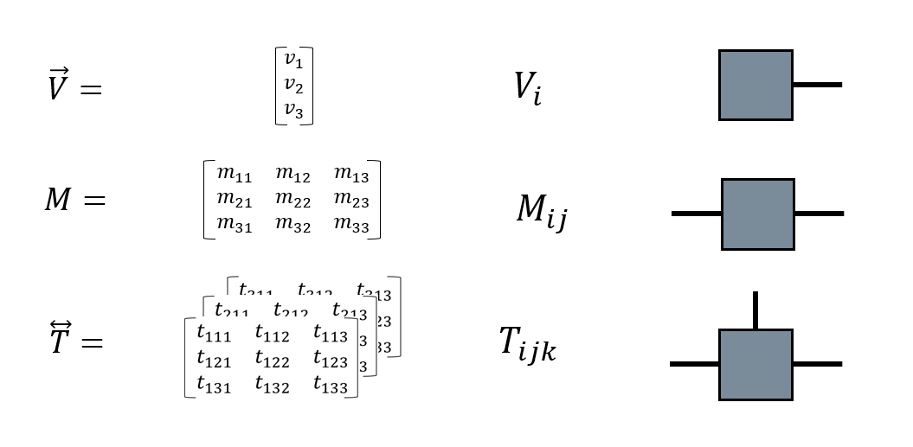

Basic Tensor Networks country mix¶
by barista Samuel Desrosiers
Note
This article is still incomplete. If you are able to read this rigth now… WTF honestly!
If you are like us, you do like to wake up to a good cup’O Joe in the morning. When I share with friends the fact that my favorite morning beverage is made out of tensor networks, some people do not believe me. They say: ‘’Sam, how can you enjoy such a hard beginning to a research journey?’’ And I get what they mean… But what they do not know is that TN (tensor networks) can be made into a very gentle and soft beverage if you give it enough love… or if you use our special Tensor Network country mix.
In this short tutorial, I will give you a basic tour of the field that will make you a TN beverage enthusiast. This text will follow the logical path of the article Basic tensor network computations in physics (i.e. Méthodes de calcul avec réseaux de tenseurs en physique, yes there IS a French translated version to that paper!). Notice here the unashamed amount of self promotion. I will also guide you toward other ressources to perfect your TN game and make you a true expert of the field.
Here, the text will be supported by code examples illustrating TN operations. TN can be expressed in three different languages:
the widely known analytical Einstein indices representation;
what we call the diagrammatic representation;
numerics, or code.
During this whole tutorial, we will support the article’s content using the three representations above. Playing with the three of those is necessary to make you a master of TN.
Important
Here is a link to the arXiv version of the paper that will make it easier for you to follow this tutorial: TN guide. Both French and English versions are included there.
What are TN?¶
If you’ve never worked with TN before, I would suggest reading sections I to III of the TN guide. Go on…
Yeah… Go read it…
I’ll wait…
Okay, so there we discussed the role that TN play in illustrating correlations in quantum systems and how they allow us to efficiently simulate them. Tensor networks are in fact playing a huge role in our group’s research and are shown to be usable in a large variety of ways, allowing us to solve problems that are leaving the scope of quantum mechanics.
TN allows us to show the inherent link between vastly different problems, information theory and quantum mechanics. The profound dose of optimism in breaths into modern physics and mathematics is why a good TN brew is the best way to begin a research day… In my humble opinion.
For the scope of this turtorial. We can simply consider tensors as generalisations of matrices. In that sense, vectors are rank 1 tensors and matrices are rank 2 tensors. We’ll say taht tensors are linear maps represented with indices.
Here we see three ways tensors can be represented that we discussed in the introduction. A rank 1 (vector), rank 2 (matrix) and rank 3 tensors are all displayed in these three languages.

Take a time to analyse this image and to understand how these languages maps from one to the other. Obviously tensors of superior ranks (4 and more) cannot be displayed explicitly like what we do here… But you probably get the idea at that point. The legs comming out of the shapes in the diagrammatic representation are analogues of each tensor’s index.
Let’s represent these three tensors in a python snippet of code.
(snippet of code)
So we went a little deeper into what are tensors… but we have yet to define what tensor networks (TN) are!
Remember how matrices and vectors multiply?
… Of course you remember! You are a physicist working in a field related to quantum mechanics… This was a rethorical question! But yeah…
If you think about it, matrices products, vectors scalar products are specific versions of tensor contraction. This operation happens when, in the einstein representation an index is repeated two times in an expression.
An expression of many tensors, in that sense, IS a TN. A network of tensors linked together by linear algebra operation. Often the contraction operation on tensors indices will be reprensented in the diagrammatic form by linking two legs together. You can understand that the two indices anologue to these legs are the ones the contraction is applied to.
The contraction is one of the basic operations applied on tensors… It will be further explained in the next section.
Common operations on tensors¶
Okay… So if you never played with TN before I would suggest